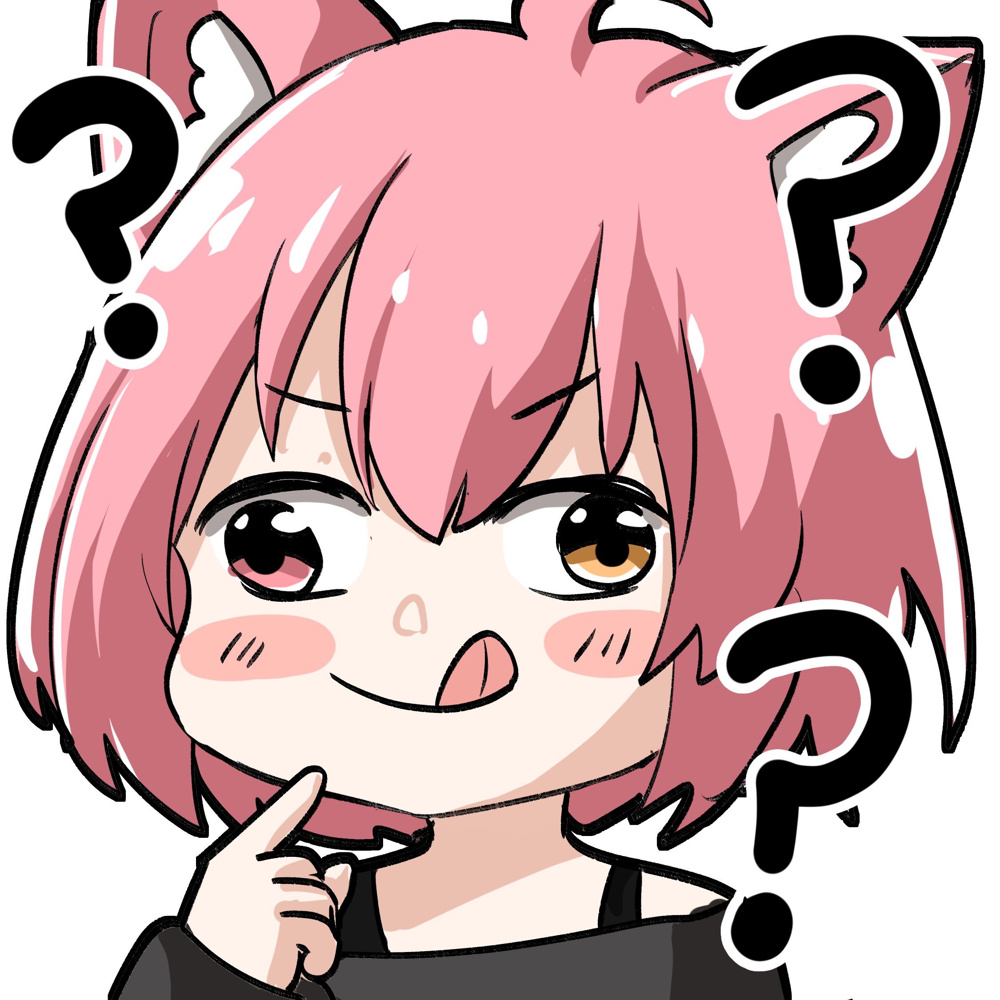

Milton estaba en VRChat ya que el siempre que miraba que pony0n estaba el actualizaba su status para ver si existía la posibilidad de que pony0n se uniera con el,
y en ese momento pasó.
¿Que debería de hacer cuando la mire? ¿Que será lo primero que tengo que decir?
